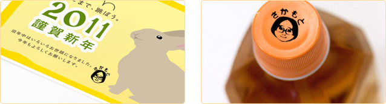

シヤチハタショップのページに移ると、「Miiもちものスタンプ」と「Miiスタンプくん」の紹介動画が流れ始めました。Wiiの間ショッピングでは、こうした動画をウインドウショッピング感覚で見ているだけでも、ついつい楽しくて時間を忘れてしまいそうになります。
……とはいえ、これは体験レポートなので、そうも言っていられません。
……とはいえ、これは体験レポートなので、そうも言っていられません。
今回は小さくて持ち運びしやすい「Miiもちものスタンプ」を注文してみましょう。
注文画面では、まずWiiの間に登録した「家族Mii」が表示されるので、この中からスタンプにしたいMiiを選びます。「表情を変える」ボタンを押すと、スタンプしたときのMiiの表情を変えることができます。大いに悩んだあげく、まずは普通の表情ということで落ち着きました。
※「似顔絵チャンネル」で作成した他のMiiを選びたい場合には、あらかじめWiiの間の「設定」画面で登録しておく必要があります。
次に、スタンプに入れる名前を入力します。Miiに付けた名前とは別の名前を入れてもよく、最大10文字までなら名前でなくても大丈夫です。たとえば驚いた顔のMiiに「すごい！」などと入れるなど、表情と文字とを組み合わせれば、特定のシチュエーションに合わせたスタンプも作れそうです。
※「Miiもちものスタンプ」の場合は、文字の種類は「丸ゴシック体」のみが選択可能です。
続いて、スタンプ本体の色をブルー、ピンク、オレンジ、イエロー、グリーンの5色から選びます。ぼくはブルーを選びましたが、みなさんも自分の好きなカワイイ色・カッコイイ色を念入りに選んでみてください。
「スタンプイメージを見る」を押すと、実際に届いたスタンプを押したときにどんな印影になるのか、ここであらかじめ確認することができます。これでOKなら「注文する」を押しましょう。これでスタンプのオーダーメイド作業は完了です。 あとはガイドに従って注文を完了すれば、到着を楽しみに待つばかりです！
オーダーから約一週間で、待ちに待った「Miiもちものスタンプ」がついに到着！ 本当にWiiの間からお買い物ができてしまいました。Miiスタンプ専用ケースのフタからは、オーダーしたとおりの表情と文字が入った自分のMiiの画像が入ったスタンプがのぞけます。
まさにこの世界にひとつしかない、まぎれもなくオリジナルのスタンプです！
試しにメモ用紙に押してみると、オーダー通りの表情と文字で、自分のMiiをしっかりキレイにスタンプできました。インキはスタンプの中に入っているので、そのままポンポンと連続して押せます。気持ちよくて思わずスタンプしすぎちゃいそうです。
さらに、インキは油性なので、紙だけでなく、プラスチック・布・金属・木など、いろんなところにバッチリとスタンプできました。冷蔵庫のデザートを食べられてしまわないようスタンプしておいたり、自分の大事な本やマンガ、ニンテンドーDSのソフト、文房具など、なくしたら困る物にスタンプしたりと、用途はいろいろ。スタンプを押す場所を考えるのも楽しみのひとつです。


もちろん、バースデーカードやクリスマスカード、名刺など、お手紙や書類にワンポイントで使っても、個性的で目立つこと間違いなし。今から新年のメッセージを入れた専用スタンプをオーダーしておけば、来年の年賀状にも間に合います！ Wiiの間に家族Miiとして登録されていればOKなので、お友だちのMiiをスタンプにしてプレゼントするのも良いかもしれません。
ちなみに、スタンプ本体にはストラップ用のフックもついています。DSやケータイのストラップにつければ、持ち運びもラクラク。いつでもどこでも、ちょっとしたサインがわりに使ったり、ふと気付いたときに使うことができます。それにしても、こうして画面から飛び出した実物をまじまじと目にすると、また違ったインパクトがあります。スタンプしているうちに、なんだか自分も愛着がわいてきました。
みなさんもぜひ、自分だけのオリジナルMiiをスタンプにして、いろんなところに押して楽しんでみてください！
みなさんもぜひ、自分だけのオリジナルMiiをスタンプにして、いろんなところに押して楽しんでみてください！
- Wiiの間が全面リニューアル！
- 1. Wiiの間でショッピング
- 2. スタッフのオススメをご紹介！
- 3. N.O.Mで実際に商品（Miiスタンプ）を買ってみました！